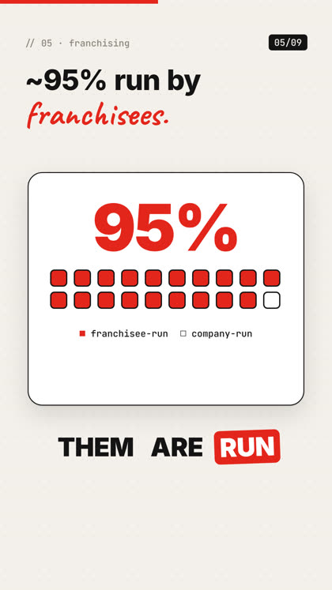
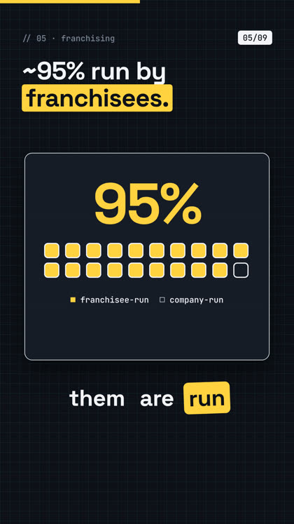
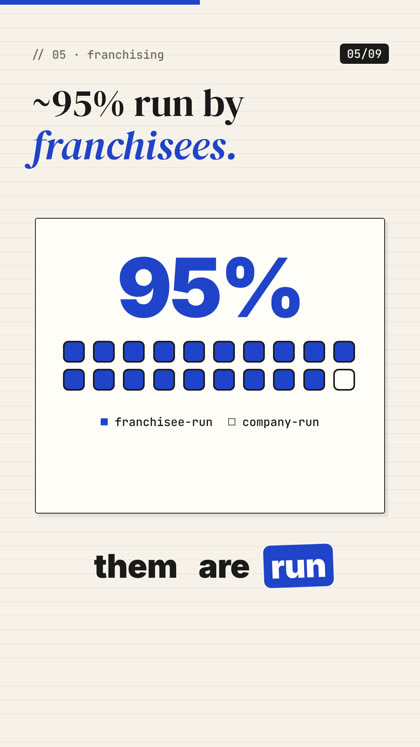
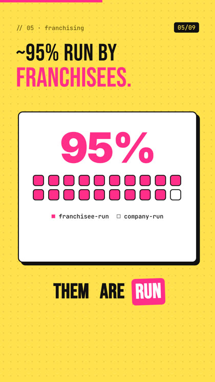

Reel Studio writes, fact-checks, voices, animates and posts short explainer videos for YouTube Shorts and Instagram Reels. Run it by hand or let it make your whole day's posts overnight.
Give it a topic, or let the topic scout research what fact niches are trending this week and pick fresh ones you haven't covered.
A 25–45 second script with a hook in the first line, written for the ear, with sources for every number.
A separate reviewer agent fact-checks each claim on the web and approves or sends it back with fixes. No "go" needed from you.
Natural narration from Fish Audio in a voice you pick, background music matched to the mood that dips under the voice, mastered to platform loudness.
Every sentence becomes an animated scene: headlines, charts, counters, maps, flows, with word-by-word captions synced to the voice.
A checker agent inspects the rendered frames. Then it schedules the reel on Instagram Reels and YouTube Shorts at your times, through Buffer's free plan, so posts go out even when your PC is off.




Skill, agents and tools set up so one sentence runs the whole pipeline.
A nightly batch makes 3–10 reels and a scheduler posts them at the times you set.
Browse Fish Audio's voices, play samples, hear your own line, choose with one click.
18 mood-sorted tracks with credits added to captions automatically.
Scheduled through Buffer's free plan with titles, captions, hashtags and your link. No Meta developer app and no YouTube API audit needed.
Pulls the views of your posted reels each night and steers new topics toward the niches that perform.
A Windows installer script and a step-by-step guide for every account you need to connect.
Secure checkout. Instant download after payment. 7-day refund policy.
| Claude Pro or Max plan (runs the agents). Pro suits 2–3 reels a day; Max suits 7–10. | from $20/mo |
| Fish Audio voice. Free developer model while offered; about 1 cent per reel after. | $0–0.01/reel |
| Rendering, music, captions. Runs on your own PC. | $0 |
| Posting: Buffer free plan (Instagram + YouTube) and a free GitHub account. | $0 |
| Graphics card | not needed |
Reel Studio makes and posts videos. Views, followers and income depend on your topics, consistency and each platform; no results are promised.
No. You run one setup script, paste a few keys, and talk to Claude Code in plain English. Knowing a little helps if you want to design your own scene styles.
YouTube's inauthentic-content rules target templated, repetitive videos. Reel Studio researches each topic, rotates four visual styles, varies scene layouts and music, and has a reviewer reject weak or repeated scripts. Posting fewer, better reels on YouTube (3–4 a day) and more on Instagram is the default setting.
Version 1 is built and tested for Windows 10/11. The core runs anywhere Node and Python run, but the installer and scheduler are Windows-only for now.
A free Buffer account with your Instagram Professional (Creator or Business) account and YouTube channel connected, plus a free GitHub account that hosts the videos for Buffer to pick up. No Facebook developer app and no YouTube API audit.
Only while the nightly batch makes the reels (about 20–40 minutes per reel). Buffer posts them later at your times, with your PC off.
Email us and we'll help you get it running. If we can't, you get a full refund within 7 days of purchase. See the refund policy.
Yes. Videos you make are yours. The license covers one creator or a team of up to 3; you can't resell or share the system itself.
Remotion, the animation engine, is free for individuals and companies of up to 3 people. Larger companies need their own Remotion license.
Email us. The support address goes up with the launch; until then, check back soon.